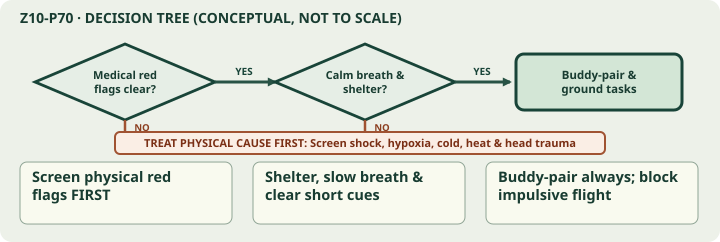

Z10-P70 · Wilderness medicine · New manuscript
Stabilize acute panic and psychological shock during delayed rescue
Calm acute distress and prevent panic-driven wandering or hyperventilation while preserving group decision quality.
When it applies · Lost parties, storm-trapped groups, trauma witnesses, or injured companions awaiting delayed rescue.
Equipment · Calm clear voice, shelter/warmth, simple structured tasks, and buddy pairing.

Actions
- Check for physical causes of agitation FIRST (low oxygen, head injury, shock, low blood sugar, hypothermia, or heat stroke)—never label sudden confusion or combativeness "just panic" before ruling out medical red flags.[M05, M11, T03]
- Once physical life threats are addressed, speak calmly in short concrete sentences, shelter the person from wind/noise, guide slow steady breathing (in slowly through the nose, long calm exhale), and give simple grounding tasks (holding a pad, checking a watch).[T06, E11, ED]
- Keep distressed companions paired with a calm buddy at all times so fear never drives impulsive solo flight into dark, cold, or hazardous terrain.[T06, E11]
Failure recognition · Calling a hypothermic or head-injured hiker's agitation "hysteria" and missing life-threatening physiological decline, or letting a panicked person bolt down trail alone.[T03, M11, T06]
Verify · Confirm medical causes of confusion were screened first, calm breathing/shelter is active, and continuous buddy supervision prevents wandering.[T03, T06, E11]
Stop or change course · Persistent confusion, inability to stay safely with the group, or self-harm risk requires priority assisted evacuation and clinical/crisis support.[T02, T06]
Evidence and editorial notes
- E11 · NPS · Hike Smart (current web edition)
- Section: Plan your hike; Stay together · Conditions: Groups on hiking routes
Support: Choose a route suited to the group's abilities and hike at a pace that keeps the group together.
Limitations: Fast hikers moving ahead at junctions is a leading driver of preventable separation. · Conflicting evidence: None; aligns with SAR prevention principles.
Editorial note: Core reference for group accountability and pacing cards. · Specialist reviewer: Group leaders and search and rescue
Primary source · checked 2026-11-24 - M05 · NIH / MedlinePlus · Shock (current web edition)
- Section: Recognizing Circulatory Shock and Positioning · Conditions: Injured or ill patient with pale cool clammy skin, rapid weak pulse, confusion, or dizziness
Support: Treat suspected shock as a life-threatening emergency: call 911, control external bleeding, keep the person warm and insulated from cold ground, and do not give food or drink.
Limitations: Field responders cannot diagnose internal hemorrhage or administer IV fluids. · Conflicting evidence: None; reinforces keeping suspected shock patients NPO and warm.
Editorial note: Core shock recognition and stabilization boundary in Z10. · Specialist reviewer: Emergency and wilderness medicine
Primary source · checked 2026-11-24 - M11 · NIH / MedlinePlus · Head Injuries (current web edition)
- Section: Head Injury, Concussion Signs, and Spinal Precautions · Conditions: Falls, struck-by-branch trauma, or head impact with confusion, vomiting, worsening headache, or neck pain
Support: Assume possible head or spinal injury after significant impact; keep the head and neck still, monitor level of responsiveness, call EMS for red flags (loss of consciousness, repeated vomiting, unequal pupils, confusion, neck pain), and never resume hazardous travel.
Limitations: Delayed intracranial bleeding can worsen hours after an initially mild-seeming impact. · Conflicting evidence: None; mandates conservative evacuation for any neurologic red flag.
Editorial note: Grounds head-trauma, concussion, and spinal-motion-restriction cards. · Specialist reviewer: Neurotrauma and wilderness EMS
Primary source · checked 2026-11-24 - T02 · American Red Cross · First Aid Steps (current web edition)
- Section: First Aid Steps > Call 9-1-1 · Conditions: Lay emergency response to unresponsiveness, abnormal breathing or severe bleeding
Support: Activate EMS and get needed equipment. Follow dispatcher directions and act within training.
Limitations: Remote locations may delay EMS arrival, requiring sustained stabilization after activation. · Conflicting evidence: None; aligns with NPS-E.
Editorial note: Mandates early emergency activation and dispatcher adherence. · Specialist reviewer: EMS and wilderness medicine
Primary source · checked 2026-11-24 - T03 · CDC · Preventing Hypothermia (current web edition)
- Section: Warning signs; What to do · Conditions: Cold exposure and suspected hypothermia
Support: Confusion, slurred speech and drowsiness are warning signs. Obtain medical attention and protect from further cold.
Limitations: Shivering may stop as hypothermia worsens; absence of shivering is not reassurance. · Conflicting evidence: None; aligns with WMS cold guidelines.
Editorial note: Core neurological red-flag trigger for stopping activity and calling rescue. · Specialist reviewer: Wilderness medicine
Primary source · checked 2026-11-24 - T06 · NPS · Outdoor Emergency Plan (current web edition)
- Section: If you get lost or hurt; call for help · Conditions: Outdoor US emergency
Support: Communicate location, last known point, situation and needs. Stay put when unable to establish a safe route unless immediate danger requires movement.
Limitations: Cell signal is unreliable in backcountry terrain; pre-trip plans bridge communication gaps. · Conflicting evidence: None; core lost-person decision rule.
Editorial note: Foundation for stay/signal/move and dispatch handoff cards. · Specialist reviewer: Search and rescue
Primary source · checked 2026-11-24
Source lineage · NPS Emergency Plan and American Red Cross; new manuscript · Classification · New manuscript.